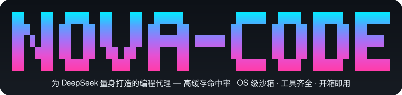
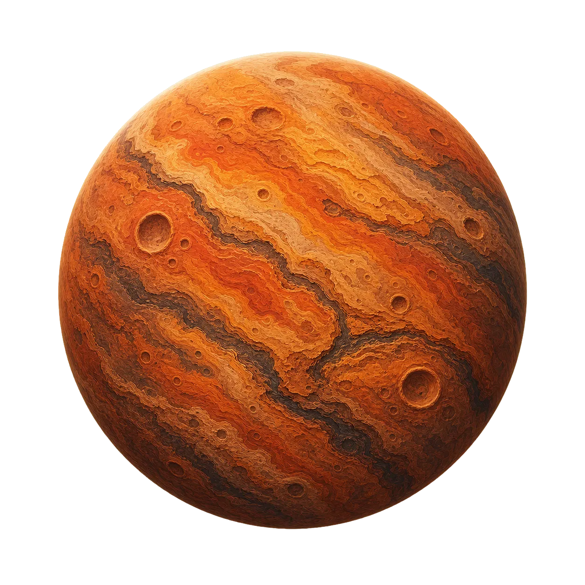
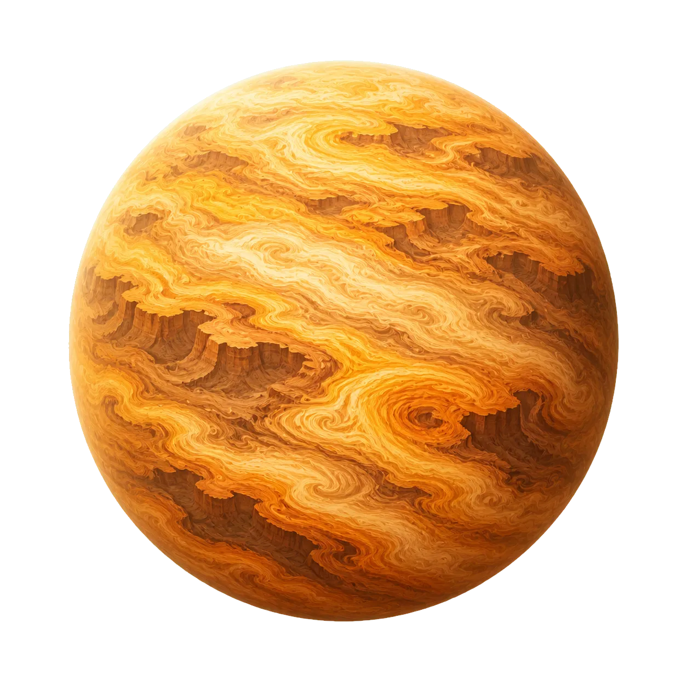

Nova-Code
品牌设计规范
一套从官网提炼出的设计语言：深空紫的宇宙叙事、等宽字体的工程质感、克制而有呼吸的动效。本页是标志、色彩、字体、图形、组件与文案口吻的唯一事实来源——做任何 Nova-Code 的物料，先看这里。
品牌内核：一颗为 DeepSeek 而生的新星
Nova（新星）不是装饰性的命名。它同时表达三件事——爆发式的效率跃迁、可被观测的确定轨道、以及围绕一个恒星（DeepSeek）构建的完整系统。所有视觉决策都必须能回到这三点。
一句话定义
为 DeepSeek 而生的终端编程 Agent。
英文定义
A DeepSeek-native coding agent for your terminal.
三个支点
省钱 · 安全 · 灵活。任何一屏物料至少落到其中一条，不要三条都讲成一句空话。
名称书写规范
| 场景 | 正确 | 错误 | 说明 |
|---|---|---|---|
| 产品名 | Nova-Code | NovaCode / nova code / NOVA-CODE | 首字母大写、中间连字符，正文中不全大写 |
| 简称 | Nova | nova（指代产品时） | 上下文明确时可用简称，仍需首字母大写 |
| CLI 命令 | nova | Nova | 命令行二进制永远小写，且用等宽字体呈现 |
| 包名 | @nova/core | @Nova/Core | workspace 包名全小写 |
| 模型名 | DeepSeek | Deepseek / deep seek | 大写 S，是我们最重要的伙伴名词 |
| 许可证 | Apache 2.0 | Apache2 / APACHE-2.0 | 对外一律这一种写法 |
标志：一颗行星，和一段等宽字标
标志系统由两部分组成——立体渲染的应用图标（行星）与像素栅格化的字标。二者可单独使用，也可横向锁定成组合标志；组合关系一经确定不得自行调整。

Wordmark · logo.svg安全边距
四周留白不小于图标高度的 1/2（记作 X）。任何文字、边框、图片都不得进入该区域。
最小尺寸
低于最小尺寸时行星的环带与高光会糊成一团，此时改用纯字标或单色版本。
- 优先把标志放在深空底或浅紫灰底上，让行星的紫光有呼吸空间。
- 图标保持原始方形比例，只在被当作「嵌入式行星」使用时（如终端标题栏）做圆形裁切。
- 组合标志中，图标与字标间距固定为
11px（小尺寸）/13px（大尺寸）。 - 需要单色场景时，用纯白或
--ink呈现字标，图标改用纯色剪影。
- 不要拉伸、旋转、倾斜图标，也不要给它加描边或投影以外的效果。
- 不要重新排布组合标志（上下堆叠、字标在左都不允许）。
- 不要把标志放在杂乱照片、高饱和纯色（尤其橙、绿）或低对比灰底上。
- 不要改写标语中的字词，也不要把标语与字标的字体混用。
色彩：深空紫主导，青与品红只用来点亮边缘
整套颜色以 CSS 自定义属性发布，明暗两套主题共享同一批变量名——写样式时永远引用变量，不要写死十六进制。点击任意色卡即可复制色值。
主色 · Accent
中性色 · 亮色主题
深空色 · Cosmos（深色区块与终端面板专用）
渐变 · Gradients
- 始终通过
var(--accent)这类变量取色，明暗主题自动切换。 - 深色区块与浅色区块交替出现，形成「深—浅—深」的阅读节奏。
- 正文与底色对比度不低于 WCAG AA（4.5:1）；等宽小字不低于 12px。
- 不要引入品牌色板之外的第五种色相（尤其是暖橙、草绿做主色）。
- 不要用主色铺大面积实底——紫色是强调色，不是背景色。
- 不要在同一屏里同时使用两种以上渐变，光会互相打架。
字体：系统无衬线讲人话，等宽字体讲工程
不加载任何 Web 字体——首屏必须零字体请求。中文走系统字体栈（苹方 / 微软雅黑），所有技术性内容（命令、路径、指标、标签）一律等宽，这是 Nova-Code 最强的排版识别符。
Sans · 界面与正文
-apple-system, BlinkMacSystemFont, "Segoe UI", "PingFang SC", "Hiragino Sans GB", "Microsoft YaHei", Roboto, sans-serif
Mono · 技术语汇
ui-monospace, "SF Mono", "JetBrains Mono", "Cascadia Code", "Roboto Mono", Menlo, Consolas, monospace
700 · lh 1.16 · ls −.035em
700 · lh 1.12 · ls −.02em
可搭配等宽副名
说明文 1.06rem · --muted
ls .2em · uppercase · 前置短横
--faint / --accent
排版三条硬规矩：标题一律 text-wrap: balance；正文段落宽度不超过 44ch（首屏副标题 33ch）；英文技术名词在中文句子里不加空格以外的任何修饰，也不翻译（Hook、MCP、Skill、Agent 保持原文）。
图形语言：五颗行星，一片可信的深空
行星是 Nova-Code 的插画母题。它们代表「围绕一个恒星运行的系统」，每颗对应一个设计支柱，出现顺序固定，不要临时新增或替换材质。





底纹三件套
- 行星统一投影
drop-shadow(0 14px 20px rgba(5,2,14,.5))，光源恒定在左上。 - 让行星部分溢出容器边界（压住卡片顶角），制造纵深。
- 底纹永远是配角：栅格与星点透明度控制在 .03–.09，并加渐隐遮罩收边。
- 不要用通用图库的科技配图、电路板、机器人、人脑。
- 不要给行星换色相去凑主题色——材质本身就是识别点。
- 不要在浅色区块上直接铺深空底图，浅色区靠留白与紫光晕承载。
组件：一套可以直接抄走的原子
下列组件在官网、文档、演示物料中通用。间距体系为 8 的倍数，圆角只有三档：7–8px（芯片/小控件）、12–14px（按钮/卡片）、20px（面板）。
徽标与按钮
主按钮一屏只出现一个；命令条是「第二动作」，永远可点击复制并给出 --ok 色的完成反馈。
芯片、指标与能力卡
/resume 交互式挑选历史会话，完整迁移 Agent 状态；/clear 开新会话而不丢旧的。
数字用等宽加粗 + 主色，单位与说明用常规字重，避免整句都在喊。
终端面板 · 品牌的主视觉道具
终端面板必须包含：三色灯 + 图标标题栏、真实可信的命令输出、至少一处 --ok 或 --warn 状态色。截图里不要出现编造的接口名或不存在的命令。
动效：慢、轻、可暂停
动效服务于「这是一个活着的运行时」这一叙事，而不是炫技。所有环境动画都必须能被 prefers-reduced-motion 与视口检测停掉。
| 类型 | 时长 | 缓动 | 用法 |
|---|---|---|---|
| 微交互 | .2s | ease | 颜色、边框、图标状态切换 |
| 悬停浮起 | .25–.35s | ease | translateY(-2px ~ -5px) + 阴影加深 |
| 面板变换 | .5s | cubic-bezier(.2,.75,.2,1) | 终端 3D 旋转归位、大卡片位移 |
| 入场揭示 | .7s | ease | 滚动进入时 opacity 0→1 + 18px 上移 |
| 环境循环 | 4–52s | ease-in-out / linear | 行星漂移、极光、轨道、流光；一律 infinite alternate |
布局尺度
- 内容最大宽度
1140px，左右安全边距24px（移动端18px）。 - 区块纵向留白
90px（移动端72px）；深浅区块交替，边界用 1px 紫调描边收口。 - 栅格：三栏用于并列能力，两栏用于图文对照，长列表用「编号 + 标题 + 描述」的三列行式索引。
性能红线
- 只动
transform与opacity，不要动background-position之类会全量重绘的属性。 - 离开视口的区块必须暂停动画（
IntersectionObserver+animation-play-state）。 - 不加载 Web 字体、不引外部脚本；首屏图片用 WebP 并预加载关键一张。
终端色板
Nova-Code 的主界面是终端。本节是终端色彩的规范值——已落地，与源码一致；两者不符时以源码为准，并把本节当 bug 修。文末的校正记录留存了这批值替换掉了什么、为什么。
对比度标准的实测依据
一条容易想当然的规矩是「正文级色相在近黑与近白上都要 ≥ 4.5:1」。实测下来没有任何一个饱和色能同时做到——能满足浅底的必然在深底失效，反之亦然。唯一两边都过线的是中等亮度的去饱和色，而它在小号等宽字下会发糊。
| 候选色 | 纯黑底 | #1e1e1e 底 | 纯白底 | 结论 |
|---|---|---|---|---|
#6D28D9 规范主色 | 2.96 | 2.35 | 7.10 | 深底不可用 |
#A855F7 规范亮主色 | 5.31 | 4.21 | 3.96 | 两侧最均衡 |
#ff3caa 现行主色 | 6.48 | 5.14 | 3.24 | 浅底本就未达 4.5 |
#00eeff 光谱青端 | 14.67 | 11.65 | 1.43 | 浅底几乎不可见 |
#9e629e 现行 H4 | 4.69 | 3.73 | 4.47 | 两边勉强，但发灰发糊 |
规范色板
对比度按「纯黑 / 纯白」两端标注，数值为实测。下限见前一节：正文级近黑 ≥ 4.5、近白 ≥ 3，chrome 与边框近黑 ≥ 4，白字填充 ≥ 4.5。
| 角色 | 色值 | 对比度 黑/白 | 依据 |
|---|---|---|---|
| 界面主强调 提示符、斜杠命令、加载动画、状态行、面板顶栏、思考标签、模态框 |
#a855f716 色回退 magenta |
5.31 / 3.96 | 规范 --accent-bright 原值。终端整体印象由此为紫，与网页一致。面板顶栏与思考标签共用此色，全局只此一个 chrome 紫 |
| 标题 H1 H2 H3 H4–H6 |
#f0a6e6#ec7cdc#e650d2#b43fa4 |
11.30 8.48 6.44 4.19 |
锚定在字标光谱的品红停靠点 #e650d2（H3），向两端提亮/压暗。单一色相按亮度分级，H4–H6 共用底档避免读成禁用态 |
| 行内代码 | #a78bfa16 色回退 blue |
7.72 / 2.72 | 落在规范 --accent（暗色档 #B98CFF）family 内。比 chrome 紫更亮更淡，两者并置仍可区分；回退取蓝而非品红，是为避开标题 |
| 激活态芯片填充 白字压在其上 |
#6d28d9 |
白字 7.10 | 规范主色 --accent 原值。它作终端文字不可用（近黑仅 2.96），作填充却最优——背景是深端品牌色在终端唯一的用武之地 |
| 成功 / 就绪 | #46c77e |
9.73 / 2.16 | 规范 --ok。此前状态类绿有三种并存，已归一 |
| 警告 / 待确认 | #e9a23b |
9.70 / 2.17 | 规范 --warn |
| 会话徽标十色 | #06828a #087cb6 #106df5 |
白字 ≥ 4.60 | 沿字标光谱色相弧（184°→326°）等距取十点，各自压暗到白字过 AA。相邻两色的 RGB 距离 34.8，比替换前的通用色板更易区分 |
粉 #ff3caa |
小面积点缀 | 6.48 / 3.24 | 不作主色。保留在 banner 光谱末端等小面积处，作为紫调之上的高光 |
刻意保持不变的部分
列表标记与链接：继续用 16 色 ANSI 名
看上去它们「该」换成字标光谱的青 #00eeff 与蓝 #5aa0ff，但那会在浅色终端上直接崩掉——青端白底仅 1.43:1，等于隐形。ANSI 具名色由用户终端主题重映射，永远与其背景协调。这是终端独有的优势，不要用真彩色去换掉它。
Banner 光谱：逐值不动
启动 banner 的七档渐变中间五档已与字标光谱逐值相同，是两个介质间唯一天然对齐的资产。它是本次校正的基准，不是校正对象。
权限模式：功能色豁免
五种模式必须一眼分辨，可辨识性优先于品牌一致性。仅建议把默认档的中性灰调成微带紫的灰。首次配置面板上的 DeepSeek 品牌蓝同样豁免——那是第三方标识色。
Beta 徽标蓝：出身可疑，但达标
它同样来自通用框架色板，本该一并换成光谱蓝 #5aa0ff。但实测拦下了这一步：现值近黑 4.06、近白 5.17，两侧都过线；换成光谱蓝后近白只剩 2.66，反而违反本节自己的下限。出身不正不等于该改——按数据留用。
Diff 前景与底纹：不动
加/减色是跨工具的既定约定（绿加红减），读者的肌肉记忆比品牌色重要。且它们运行在自带背景色的行内，不受终端主题影响。
规范分层：哪些条目进得了终端
无条件适用
- 名称书写规范（Nova-Code /
nova/ DeepSeek） - 色相家族：紫为主导，品红与青为点缀
- 字标光谱的停靠点与顺序
- 语气与文案口吻
终端不适用
- 全部背景变量（ground / surface / cosmos）
- 明暗双主题与
prefers-color-scheme - 字号阶梯、字重、letter-spacing、行宽
- 渐变面、阴影、圆角、模糊
- 五档动效时长与缓动曲线
终端独有约束
- 16 色 /
NO_COLOR回退链 - 深底优先的对比度标准
- 色相不得与相邻角色撞色
- 颜色不得单独承载信息
- 定帧重绘节奏
80ms
三条硬规矩
① 只画前景
终端背景归用户所有。仅三处允许上背景色：diff 行底纹、输入区选区、会话名徽标。其余一律靠前景色与字符边框造型。
② 深底优先，浅底不塌
正文级近黑 ≥ 4.5:1、近白 ≥ 3:1；chrome 与边框近黑 ≥ 4:1。规范亮色主题的 #6D28D9 在近黑仅 2.96:1，禁止作终端文字色——要紫就用 #A855F7。
③ 颜色只是补充
每个真彩色都要有 16 色近似，且回退后不得与相邻角色同色（现行行内代码回退到蓝而非品红，正是为了避开标题——这条先例要保留）。靠颜色区分的状态必须同时用字形或字面标记双编码。
色相分配
终端里正文与内嵌元素共处一行，色相冲突比网页严重得多。五个高频角色的色相分配完毕后，新增元素只能复用，不得新开。
校正记录
上表的值是一次性校正的结果。留档于此，是为了让后来者知道哪些取值是刻意的，不要在不了解缘由的情况下改回去。
校正前存在的三个偏离
① 主色取错了光谱位置
网页主导色相是紫，品红只出现在字标光谱末端与标题流光。校正前，终端把末端色 #ff3caa 当成了整个 chrome 的主色——提示符、斜杠命令、加载动画、状态行、模态框。同一产品，网页读作「深空紫」，终端读作「赛博朋克粉」。
② 标题阶梯也偏粉
当时的标题四档 #e8a8e8 → #9e629e 属兰花紫/粉系，不在品牌色相内。于是终端里面积最大的两处（chrome 与标题）双双偏粉，偏离被放大而非抵消。
③ 大量通用色板默认值
当时的会话徽标十色是某 CSS 框架的 600 档原值，逐个对应；模式色里的青、正文紫、Beta 徽标蓝同样是该框架的 400/600 档。这些颜色没有经过品牌决策。
| 改了什么 | 从 → 到 | 影响面 |
|---|---|---|
| 界面主强调 | #ff3caa→#a855f7 | 提示符、斜杠命令、加载动画、状态行、审批与选择器高亮、鼠标悬停高亮、首次配置与信任面板 |
| 标题阶梯四档 | #e8a8e8 #ce8ece #b676b6 #9e629e→#f0a6e6 #ec7cdc #e650d2 #b43fa4 | 全部 Markdown 渲染输出。亮度阶梯逐档基本持平（11.2/8.4/6.3/4.7 → 11.3/8.5/6.4/4.2），只换色相 |
| 面板顶栏紫 | #7c3aed 独立常量 → 并入主强调，常量删除 | 约 25 处面板顶栏；思考标签同步并入 |
| 激活态芯片填充 | #7c3aed→#6d28d9 | 问答面板的标签条。单独拆出，因为白字压在其上需要更深的底 |
| 状态绿 / 警告琥珀 | #3ddc84 #ffb454→#46c77e #e9a23b | 权限模式行。色相不变（仍是绿与琥珀），可辨识性不受影响 |
| 默认模式中性灰 | #b8c1cf→#bfb8cf | 状态行模式区，蓝灰改微紫灰 |
| 会话徽标十色 | 通用框架 600 档 → 光谱色相等距采样 | 已命名会话的徽标与输入框边框。最差白字对比度 3.09 → 4.60 |
| 未改动 | banner 光谱、diff 加减色、列表 cyan、链接 blue、行内代码 violet、权限模式的青与红 | 理由见「刻意保持不变的部分」 |
全部值已通过程序化对比度校验（见上表数值）。唯一无法自动化的一步是在近黑与近白两种真实终端上各跑一遍会话肉眼复核——尤其是标题里嵌行内代码时品红与紫的可分辨性。现行色值当初也是「在真实会话上肉眼挑」定下来的，后续调整应沿用同一验收方式。
- 先在近黑与近白两种终端上各看一遍，再定色。
- 新增角色优先复用已分配的五个色相，实在不行才动色板。
- 色值集中定义在一个模块里导出，不要在组件里散写十六进制。
- 颜色关掉后界面仍要完整可用——这是可访问性底线，不是可选项。
- 不要把已随用户主题走的 ANSI 具名色「升级」成真彩色。
- 不要直接搬网页亮色主题的深紫做终端文字色——近黑底上会糊成一团。
- 不要从通用 CSS 框架的默认色板里取色补空缺，那是本次偏离的主要来源。
- 不要为了品牌一致性去牺牲权限模式行的可辨识性。
语气：像一个不吹牛的资深工程师
我们的读者会读源码。文案里的每个数字都要能被验证，每个能力都要能被复现——夸张一次，信任就没了。
具体优于形容
说「96%+ 前缀缓存命中率」，不说「极致性能」。没有数字就描述机制。
先说结论
标题给答案，正文给原因。破折号用来承接转折，不用来堆排比。
承认边界
对比表注明时间与前提；不支持的平台就写「静默降级」，不粉饰。
| 不要这样写 | 要这样写 | 为什么 |
|---|---|---|
| 革命性的 AI 编程神器 | 为 DeepSeek 而生的终端编程 Agent | 说清楚是什么，而不是有多厉害 |
| 极大降低成本 | 同等预算跑出数倍吞吐，效果丝毫不减 | 给可感知的量级，而不是形容词 |
| 全方位安全防护 | 所有 bash 与子进程跑在内核沙箱里，写入锁在工作区内 | 说出机制，读者才能判断真假 |
| 零门槛上手 | 命令行兼容 Claude Code，几乎零学习成本 | 给出参照系，可验证 |
| 业界唯一 | 开源阵营里唯一或最完整的一个（截至 2026 年） | 限定范围与时间，经得起追问 |
中英混排规则：中文与拉丁字母、数字之间留一个空格；代码、命令、文件名一律用等宽字体并保持原始大小写；技术名词（Hook、MCP、Skill、Agent、prefix cache）不翻译。
资源清单
全部位于仓库 docs/ 目录，直接引用相对路径即可，不要另行导出低质量副本。